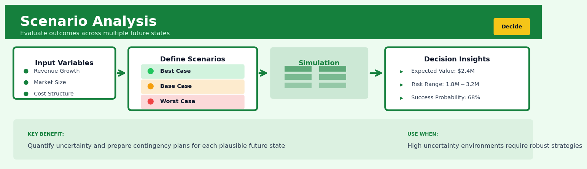

Scenario Analysis#


The biggest mistake teams make with scenario analysis is treating it like a prediction exercise when it's actually a preparedness tool. Your scenarios should be plausible, not probable, and the real value comes from identifying early warning indicators that tell you which scenario is unfolding so you can pivot strategy before it's too late. I've seen companies waste months debating probability percentages when they should be building trigger-based action plans for each scenario instead.
The 60-Second Version#
What it does: Scenario analysis shows you how your strategy performs across several plausible futures, not just the one you’re planning for.
When to use it: Use it when facing big decisions with uncertain futures—like market disruptions, regulatory changes, or technology shifts—where being wrong could be costly and you can’t just “get more data” to resolve the uncertainty.
What you get back: A comparison table showing how each strategic option performs in each future scenario, revealing which choices are robust (work well everywhere) versus fragile (excel in one future but fail in others).
At a Glance
Difficulty |
Moderate |
Typical runtime |
Hours to days (mostly scenario design, not computation) |
What you bring |
A decision to make, key uncertainties, and a model that evaluates outcomes |
What you get |
Performance of each option across scenarios; identification of robust strategies |
Heuristix bucket |
Decide — Decision Intelligence |
Scenarios are not predictions—they’re stress tests for your strategy against futures you cannot rule out.
Learning Objectives#
After reading this chapter, a business user will be able to:
Identify decisions where uncertainty about the future (rather than lack of current data) is the primary risk, and distinguish when scenario analysis is more appropriate than forecasting or sensitivity analysis.
Interpret scenario analysis outputs—including performance tables, regret matrices, and robustness metrics—and translate them into clear recommendations about which strategy minimizes downside risk or performs consistently across futures.
Use scenario results to facilitate strategic planning conversations with executives by articulating trade-offs between strategies optimized for specific futures versus those that hedge against multiple outcomes.
After reading this chapter, a data scientist will be able to:
Construct internally consistent scenario definitions by identifying key uncertainties, ensuring independence between scenario drivers, and validating that each scenario represents a plausible future state rather than an arbitrary parameter combination.
Select the appropriate number of scenarios and level of detail by balancing computational complexity, stakeholder comprehension, and the dimensionality of the uncertainty space, while avoiding both oversimplification and scenario proliferation.
Validate scenario analysis results by checking for logical consistency across scenarios, testing the stability of strategy rankings under scenario perturbations, and diagnosing when poor performance indicates genuine strategic weakness versus misspecified scenarios.
Overview#
Scenario analysis is a structured decision intelligence technique that evaluates the performance of a system, portfolio, or strategy across a discrete set of plausible future states of the world. Its core purpose is to quantify how sensitive key outcomes are to fundamental uncertainties—particularly those that cannot be easily reduced through additional data collection—thereby enabling decision-makers to choose actions that perform robustly across multiple futures rather than optimally in only one. Scenario analysis belongs to the family of what-if analysis methods, sitting alongside sensitivity analysis, stress testing, and Monte Carlo simulation, but is distinguished by its emphasis on internally consistent, narratively coherent future states rather than independent parameter perturbations.
When to Use This#
Use this when:
Strategic planning under deep uncertainty — When your organisation faces fundamental uncertainties about the competitive, regulatory, or technological environment that cannot be resolved through forecasting, scenario analysis helps you develop strategies that remain viable across multiple possible futures.
Capital allocation decisions with long time horizons — When evaluating infrastructure investments, R&D portfolios, or market entry decisions where payoffs depend heavily on how the world evolves over 5–20 years, scenarios provide a framework for stress-testing your assumptions.
Risk management beyond historical data — When historical distributions are poor guides to future risks (e.g., climate change, pandemic events, technological disruption), scenario analysis allows you to reason about tail risks that have no precedent in your data.
Communicating uncertainty to stakeholders — When executives or board members need to understand the range of possible outcomes without wading through probability distributions, named scenarios provide an accessible mental model.
Evaluating strategic optionality — When you want to understand the value of maintaining flexibility (e.g., modular investments, staged rollouts), comparing outcomes across scenarios reveals where optionality has the most value.
Regulatory stress testing — When regulators require you to demonstrate the resilience of your capital, liquidity, or operational capacity under adverse conditions (e.g., banking stress tests, insurance solvency requirements).
Do NOT use this when:
You need a point forecast — Scenario analysis produces a range of conditional outcomes, not a single expected value. If your decision process requires a single number, you need forecasting or simulation with probability weighting.
Uncertainties are well-characterised by probability distributions — If you have reliable historical data or expert elicitation that yields credible probability distributions, Monte Carlo simulation will give you richer output than a small number of discrete scenarios.
The decision is reversible and low-stakes — The cognitive overhead of scenario development is not justified for routine operational decisions that can be easily corrected.
You are testing sensitivity to a single parameter — Use one-way or tornado sensitivity analysis instead; scenario analysis is designed for jointly varying multiple interrelated parameters.
Questions This Answers#
Planning Under Uncertainty#
If oil prices swing between \(60 and \)120 per barrel over the next three years, which of our capital projects still deliver positive returns?
We’re deciding between three market entry strategies for Southeast Asia—which one holds up best if regional GDP growth comes in at 3% instead of the projected 6%?
Should we lock in this five-year supplier contract now, or stay flexible given the uncertainty around tariffs and commodity prices?
Our base case assumes 15% market adoption of electric vehicles by 2028—but what happens to our dealer network investment if adoption hits 30% or stalls at 8%?
Which product portfolio mix keeps us profitable whether inflation stays elevated or drops back to 2% by next year?
Risk Assessment and Resilience#
If a major cyber incident takes down our systems for 72 hours, which business units recover fastest and where do we lose customers permanently?
How exposed are we if our top three suppliers all face production disruptions simultaneously due to climate events?
Can our balance sheet handle a scenario where interest rates stay above 5% for another two years while demand softens by 20%?
What’s the earliest point at which a new regulatory framework would force us to write down our current infrastructure investments?
Strategic Trade-Offs#
We can invest in automation now or expand labor capacity—which decision do we regret least across different wage inflation and demand growth scenarios?
Is it better to build redundancy into our supply chain or accept concentration risk, given we don’t know whether geopolitical tensions escalate or ease?
Should we commit to this merger if there’s a 40% chance market conditions deteriorate significantly before integration completes?
Which of our three innovation bets still makes sense if customer preferences shift more slowly than the industry forecasts suggest?
How It Works#
Imagine you’re planning a family road trip from Chicago to Denver next month. You can’t predict the weather, but you know it won’t be every possible temperature—it’ll be one of a few distinct situations. So instead of planning for “temperature between 20 and 80 degrees,” you prepare for three specific stories: “Early Blizzard” (chains, extra blankets, hotel backup), “Sunny Spring” (sunscreen, convertible top down), and “Mud Season” (4WD route, waterproof gear). You pack differently for each story, then look at your trunk and ask: “What items appear in all three scenarios?” Those are your must-haves. Scenario analysis works exactly this way—but for business decisions.
CURRENT STATE SCENARIO CONSTRUCTION EVALUATION
Your Strategy → Build 3-5 Coherent Futures → Test Performance
┌────────┐ Scenario A: "Rapid Growth" Strategy in A:
│ Launch │ • Demand: High Profit: $2M
│ new │ • Competition: Low Risk: Medium
│product │ • Regulation: Loose
└────────┘ Strategy in A':
Scenario B: "Stagnation" Profit: -$500K
↓ • Demand: Flat Risk: High
• Competition: High
Key • Regulation: Stable Strategy in B:
Uncertainties Profit: $200K
• Market demand Scenario C: "Disruption" Risk: Low
• Competitors • Demand: Volatile
• Regulations • Competition: New tech ← Decision Insight:
• Regulation: Strict "Works well in A,
survives in B,
↓ fails in C—
modify or hedge?"
Compare across scenarios
↓
┌───────────────────────┐
│ Which strategy is │
│ robust across ALL │
│ plausible futures? │
└───────────────────────┘
Step 1: Identify the uncertainties that actually matter. Start by listing the factors you can’t control but that dramatically affect your decision—things like customer demand, competitor moves, regulatory changes, or technology shifts. Ignore small uncertainties. Focus on the two or three variables where being wrong would change everything.
Step 2: Build three to five distinct future worlds. Instead of saying “demand could be anywhere from low to high,” create specific, internally consistent stories. Each scenario is a complete snapshot: “In World A, demand is high because the economy boomed and our competitor exited the market.” Every detail must fit together logically, like a coherent short story.
Step 3: Run your strategy through each world. Take your planned action—launch the product, build the factory, hire the team—and calculate what happens in Scenario A. What’s your profit? Your market share? Your risk exposure? Write down the numbers. Then do the exact same calculation in Scenario B, then C.
Step 4: Compare the results side by side. Lay out a simple table: your strategy’s performance in each scenario. One strategy might give you huge wins in Scenario A but catastrophic losses in Scenario C. Another might give you modest success everywhere. You’re looking for patterns: Where do you thrive? Where do you survive? Where do you fail?
Step 5: Decide based on what you can live with. You might choose the strategy that performs best on average, or the one that avoids disaster in every scenario, or the one that wins big in the futures you think are most likely. The scenarios don’t predict which future will happen—they show you what you’re betting on.
The key insight: Scenario analysis works because real uncertainty isn’t infinite—it clusters into a handful of dramatically different but internally coherent futures, and a strategy that survives all of them is far more valuable than one optimized for a single predicted future that may never arrive.
The Intuition#
Imagine you are planning a cross-country road trip six months from now. You could try to predict the exact weather, fuel prices, and road conditions you will encounter—but these forecasts will be highly uncertain. Instead, you might think about a few distinct types of trip: a “smooth sailing” scenario where weather is mild and roads are clear; a “winter storm” scenario where you face delays and need chains; and a “fuel crisis” scenario where prices spike and some stations run dry. Each scenario is internally consistent—a winter storm scenario includes both bad weather and road closures, not just one or the other.
This is precisely what scenario analysis does for business decisions. Rather than pretending we can forecast the future with precision, we construct a small number of coherent, plausible futures and ask: “How does our strategy perform in each of these worlds?” A robust strategy is one that performs acceptably across all scenarios, even if it is not optimal in any single one. This reframing—from “predict and optimise” to “explore and satisfice”—is the philosophical core of scenario analysis.
The power of scenarios lies in their narrative structure. Unlike a Monte Carlo simulation that might generate 10,000 possible futures, scenario analysis typically uses 3–8 carefully constructed scenarios that stakeholders can remember, discuss, and reason about. Each scenario has a name, a story, and a set of internally consistent parameter values. This narrative quality makes scenarios powerful tools for organisational alignment: when everyone in a room can say “in the recession scenario, we would…” they have a shared vocabulary for discussing uncertainty.
Critically, scenario analysis does not require assigning probabilities to scenarios. This is a feature, not a bug. In situations of deep uncertainty—where we do not know the probability distribution over future states—assigning probabilities creates a false sense of precision. Scenario analysis allows us to reason about “what would happen if…” without committing to “how likely is it that…” Of course, if you do have probability estimates, you can weight scenarios accordingly and compute expected values, but the method does not require this.
The Mathematics#
Formal Problem Setup#
Let \(\mathbf{d} \in \mathcal{D}\) denote a decision or strategy from the feasible decision space \(\mathcal{D}\). Let \(\mathbf{s} \in \mathcal{S} = \{s_1, s_2, \ldots, s_K\}\) denote a scenario, where \(K\) is the (small) number of scenarios under consideration.
Each scenario \(s_k\) specifies a complete set of exogenous parameter values:
where \(\theta_j^{(k)}\) is the value of exogenous parameter \(j\) under scenario \(k\), and \(M\) is the number of uncertain parameters.
Define a performance function \(f: \mathcal{D} \times \mathcal{S} \rightarrow \mathbb{R}\) that maps a decision-scenario pair to a scalar outcome (e.g., profit, NPV, loss). The outcome under decision \(\mathbf{d}\) and scenario \(s_k\) is:
The Scenario Matrix#
The complete analysis produces a scenario matrix \(\mathbf{Y} \in \mathbb{R}^{K \times N}\) where \(N\) is the number of decisions being compared:
Each row corresponds to a scenario; each column corresponds to a decision alternative.
Decision Criteria#
Without probability weights, several decision criteria from classical decision theory apply:
Maximin (Wald criterion): Choose the decision that maximises the worst-case outcome:
Minimax regret (Savage criterion): Define the regret of decision \(\mathbf{d}\) under scenario \(s_k\) as the difference between the best possible outcome in that scenario and the outcome achieved:
Then choose the decision that minimises the maximum regret:
Probability-weighted expected value: If probabilities \(\pi_k\) are assigned to scenarios (with \(\sum_{k=1}^{K} \pi_k = 1\)), compute:
and choose:
Mean-variance trade-off: With probability weights, the scenario variance is:
A risk-averse decision-maker might maximise:
where \(\lambda > 0\) is a risk-aversion parameter.
Assumptions#
Mutual exclusivity and collective exhaustiveness: The scenarios are assumed to cover the relevant space of futures. They need not be exhaustive of all possibilities, but should span the key dimensions of uncertainty.
Internal consistency: Each scenario represents a jointly feasible combination of parameter values. For instance, a scenario cannot simultaneously assume “rapid economic growth” and “high unemployment” unless there is a coherent causal story (e.g., jobless growth).
Exogeneity: The scenario parameters \(\theta_j^{(k)}\) are assumed to be exogenous to the decision \(\mathbf{d}\). If the decision affects the scenario (e.g., through market feedback), the analysis becomes game-theoretic and requires different methods.
Deterministic mapping: Given a scenario \(s_k\) and decision \(\mathbf{d}\), the outcome \(y_k(\mathbf{d})\) is deterministic. Any residual randomness is either absorbed into scenario definitions or ignored.
Relationship to Other Methods#
Scenario analysis is a discrete approximation to the full uncertainty space. In the limit where \(K \to \infty\) and scenarios are sampled from a probability distribution, scenario analysis converges to Monte Carlo simulation. Conversely, when \(M=1\) (single uncertain parameter) and scenarios represent parameter bounds, scenario analysis reduces to interval analysis or best/worst-case analysis.
Stress testing can be viewed as a special case of scenario analysis where scenarios are chosen to be deliberately adverse (e.g., the 99th percentile of losses) rather than representative of the full distribution.
Edge Cases#
\(K = 1\): Degenerate case; equivalent to deterministic analysis under a single assumed future.
\(N = 1\): Single decision; analysis reduces to stress testing the decision across scenarios.
Dominated decisions: A decision \(\mathbf{d}_i\) is dominated if there exists another decision \(\mathbf{d}_j\) such that \(y_k(\mathbf{d}_j) \geq y_k(\mathbf{d}_i)\) for all \(k\) with strict inequality for at least one \(k\). Dominated decisions can be eliminated from consideration.
Understanding the Mathematics#
The Scenario Outcome Function#
The equation:
Read it aloud:
“The outcome under scenario s equals some function applied to our decisions and the parameters that define scenario s.”
What each symbol means:
\(y_s\) = the outcome (profit, revenue, risk level) we get in scenario s
\(f\) = the function or model that calculates outcomes from inputs
\(x\) = our decision variables (prices to set, quantities to order, investments to make)
\(\theta_s\) = the parameters that define scenario s (demand level, competitor behavior, regulatory environment)
A concrete numerical example:
A retailer must decide how many winter coats to order (\(x = 5000\) units). Under a “mild winter” scenario (\(\theta_s\) includes average temperature of 45°F), demand is lower, so profit \(y_s = (80 - 50) \times 3000 - (50 \times 2000) = 90,000 - 100,000 = -\$10,000\). Only 3,000 coats sell at $80 each (cost $50), and 2,000 remain unsold.
Why this equation matters:
This shows that the same decision produces radically different outcomes depending on which future unfolds—forcing us to evaluate decisions across scenarios rather than assuming one future is certain.
Expected Value Across Scenarios#
The equation:
Read it aloud:
“The expected value of our outcome equals the sum of each scenario’s outcome multiplied by its probability.”
What each symbol means:
\(E[y]\) = the probability-weighted average outcome across all scenarios
\(\sum_{s=1}^{S}\) = “sum over all scenarios from scenario 1 to scenario S”
\(p_s\) = the probability that scenario s occurs (must sum to 1.0 across all scenarios)
\(y_s\) = the outcome if scenario s happens
A concrete numerical example:
An insurance company evaluates three scenarios for hurricane season:
Quiet year (\(p_1 = 0.60\)): profit \(y_1 = \$200M\)
Average year (\(p_2 = 0.30\)): profit \(y_2 = \$50M\)
Severe year (\(p_3 = 0.10\)): profit \(y_3 = -\$300M\)
Expected profit = \((0.60 \times 200) + (0.30 \times 50) + (0.10 \times -300) = 120 + 15 - 30 = \$105M\)
Why this equation matters:
Without probability weighting, we’d treat catastrophic but rare scenarios the same as likely outcomes—leading to either reckless risk-taking or paralyzing over-caution.
Regret in a Scenario#
The equation:
Read it aloud:
“The regret of decision x in scenario s equals the best possible outcome in that scenario minus the outcome we actually achieved with decision x.”
What each symbol means:
\(R_s(x)\) = regret for decision x in scenario s (always ≥ 0)
\(y_s^*\) = the optimal outcome possible in scenario s (with perfect hindsight)
\(y_s(x)\) = the actual outcome we get from decision x in scenario s
A concrete numerical example:
A manufacturer must choose production volume before knowing demand. They choose \(x = 10,000\) units.
High-demand scenario: Their outcome is $500K profit. Optimal would have been 15,000 units earning $800K. Regret = \(800,000 - 500,000 = \$300K\)
Low-demand scenario: Their outcome is $200K profit (excess inventory). Optimal would have been 7,000 units earning $350K. Regret = \(350,000 - 200,000 = \$150K\)
Why this equation matters:
Regret captures opportunity cost—how much value we left on the table—which often matters more to decision-makers than absolute outcomes, especially when explaining why we didn’t choose an alternative strategy.
The Big Picture#
The mathematics of scenario analysis is fundamentally trying to structure decisions when the future is irreducibly uncertain. Unlike sensitivity analysis that wiggles one variable at a time, or Monte Carlo that samples thousands of random combinations, scenario math evaluates performance across a small set of coherent, distinct futures—each internally consistent but mutually exclusive. This approach was chosen because real strategic uncertainties (Will the regulation pass? Will the competitor enter our market?) are discrete events, not continuous distributions. The mathematical essence is simple: calculate what happens in each plausible world, weight by likelihood, then choose the action that performs well across worlds—not just in one.
Python Implementation#
"""
Scenario Analysis: Complete Implementation
==========================================
This module demonstrates scenario analysis for a capital investment decision
under three economic scenarios.
"""
import numpy as np
import pandas as pd
import matplotlib.pyplot as plt
from dataclasses import dataclass
from typing import List, Dict, Callable
# -----------------------------------------------------------------------------
# Step 1: Define the Scenario Structure
# -----------------------------------------------------------------------------
@dataclass
class Scenario:
"""Represents a single scenario with named parameters."""
name: str
parameters: Dict[str, float]
probability: float = None # Optional probability weight
def __repr__(self):
return f"Scenario('{self.name}')"
def create_economic_scenarios() -> List[Scenario]:
"""
Define three economic scenarios for a 5-year investment analysis.
Parameters: GDP growth rate, inflation rate, interest rate, demand index
"""
scenarios = [
Scenario(
name="Base Case",
parameters={
"gdp_growth": 0.025, # 2.5% annual GDP growth
"inflation": 0.02, # 2% inflation
"interest_rate": 0.05, # 5% discount rate
"demand_index": 1.0 # Normalised demand
},
probability=0.50
),
Scenario(
name="Recession",
parameters={
"gdp_growth": -0.015, # 1.5% GDP contraction
"inflation": 0.01, # 1% inflation (disinflation)
"interest_rate": 0.03, # 3% discount rate (rate cuts)
"demand_index": 0.75 # 25% demand reduction
},
probability=0.25
),
Scenario(
name="High Growth",
parameters={
"gdp_growth": 0.045, # 4.5% GDP growth
"inflation": 0.035, # 3.5% inflation
"interest_rate": 0.07, # 7% discount rate (rate hikes)
"demand_index": 1.30 # 30% demand increase
},
probability=0.25
),
]
return scenarios
# -----------------------------------------------------------------------------
# Step 2: Define Decision Alternatives
# -----------------------------------------------------------------------------
@dataclass
class Decision:
"""Represents a capital investment decision."""
name: str
initial_investment: float
annual_fixed_costs: float
variable_cost_per_unit: float
capacity: float
def create_investment_alternatives() -> List[Decision]:
"""
Define three investment alternatives with different cost structures.
"""
decisions = [
Decision(
name="Conservative",
initial_investment=5_000_000,
annual_fixed_costs=500_000,
variable_cost_per_unit=45,
capacity=80_000
),
Decision(
name="Moderate",
initial_investment=10_000_000,
annual_fixed_costs=800_000,
variable_cost_per_unit=35,
capacity=150_000
),
Decision(
name="Aggressive",
initial_investment=20_000_000,
annual_fixed_costs=1_200_000,
variable_cost_per_unit=25,
capacity=300_000
),
]
return decisions
# -----------------------------------------------------------------------------
# Step 3: Define the Performance Function
# -----------------------------------------------------------------------------
def calculate_npv(decision: Decision, scenario: Scenario,
base_demand: float = 100_000,
price_per_unit: float = 80,
years: int = 5) -> float:
"""
Calculate Net Present Value for a decision under a scenario.
The model computes annual cash flows based on:
- Demand = base_demand * demand_index * (1 + gdp_growth)^year
- Revenue = min(demand, capacity) * price_per_unit * (1 + inflation)^year
- Costs = fixed_costs + variable_cost * units_sold
- NPV = sum of discounted cash flows - initial investment
"""
params = scenario.parameters
cash_flows = []
for year in range(1, years + 1):
# Calculate demand adjusted for scenario and growth
demand = base_demand * params["demand_index"] * (1 + params["gdp_growth"]) ** year
# Production is limited by capacity
units_sold = min(demand, decision.capacity)
# Revenue grows with inflation
inflation_factor = (1 + params["inflation"]) ** year
revenue = units_sold * price_per_unit * inflation_factor
# Costs (fixed costs also inflate)
total_costs = (decision.annual_fixed_costs * inflation_factor +
decision.variable_cost_per_unit * units_sold)
# Annual cash flow
annual_cf = revenue - total_costs
cash_flows.append(annual_cf)
# Discount cash flows
discount_rate = params["interest_rate"]
npv = -decision.initial_investment
for year, cf in enumerate(cash
## Visualisations


## Using This in Heuristix
### Quick Start
Here's the fastest path to your first scenario analysis:
1. **Connect your base case data** — typically a table with one row per decision option, strategy, or portfolio configuration you're evaluating
2. **Add a Scenario Definition node** upstream to create your scenarios (e.g., "Optimistic," "Baseline," "Pessimistic")
3. **Drag the Scenario Analysis node** onto the canvas and connect both inputs
4. **Map your outcome columns** — tell the node which metrics matter (revenue, cost, NPV, etc.)
5. **Run the node** and review the sensitivity heatmap to see which scenarios create the biggest swings
You'll immediately see which decisions are robust across scenarios and which are brittle.
### Required Inputs
The Scenario Analysis node expects **two input tables**:
**Input 1: Decision Data** — one row per decision option, with columns for:
- Decision identifier (text or numeric)
- Outcome metrics (numeric columns like revenue, cost, customer_count)
- Optional: probability weights, constraints
**Input 2: Scenario Definitions** — one row per scenario, with:
- Scenario name (text)
- Parameter values that define each scenario
- Optional: likelihood score (0-1)
**Example data shape:**
*Before (Decision Data):*
| strategy_id | base_revenue | base_cost |
|-------------|--------------|-----------|
| A | 100000 | 60000 |
| B | 150000 | 95000 |
*After connecting Scenario node:*
| strategy_id | scenario | revenue | cost | net_profit |
|-------------|-------------|---------|-------|------------|
| A | Optimistic | 135000 | 57000 | 78000 |
| A | Baseline | 100000 | 60000 | 40000 |
| A | Pessimistic | 70000 | 63000 | 7000 |
| B | Optimistic | 202500 | 90250 | 112250 |
### Configuration Parameters
| Parameter | What It Controls | Default | When to Change |
|-----------|------------------|---------|----------------|
| **Outcome Columns** | Which metrics to track across scenarios | First numeric column | Always set this explicitly to the outcomes you care about (profit, ROI, risk score, etc.) |
| **Optimization Direction** | Whether higher or lower values are better | "Maximize" | Set to "Minimize" for cost, risk, or error metrics |
| **Scenario Weighting** | Use scenario likelihoods in calculations | "Equal weights" | Choose "Use probabilities" if you have confidence estimates for each scenario |
| **Robustness Metric** | How to score cross-scenario performance | "Min-max range" | Try "Std deviation" for smoother comparisons, or "Worst-case rank" for risk-averse decisions |
| **Regret Threshold** | Highlight decisions with regret above this % | 20% | Lower to 10% for critical decisions where small differences matter |
### What You'll See
The node produces three outputs:
**Scenario Matrix Table** — Every decision × scenario combination with calculated outcomes. Use this for detailed inspection or export to reports.
**Sensitivity Heatmap** — Visual grid showing which decision-scenario pairs produce extreme outcomes. Warmer colors = higher sensitivity to that scenario.
**Robustness Rankings** — A scored list of decisions showing which perform consistently well. The top-ranked options are your "no-regrets" candidates that work across multiple futures.
**Regret Analysis Chart** — Shows the opportunity cost of each decision in each scenario (how much better could you have done if you'd known the future). Large regret bars signal brittle strategies.
### Connecting Downstream
Most commonly, you'll connect the Scenario Analysis node to:
- **Decision Matrix node** — to formally score and rank options using the robustness metrics
- **Report Builder** — to generate executive summaries with scenario narratives
- **Optimization node** — to find decisions that meet minimum performance thresholds across all scenarios
- **What-If Explorer** — to let stakeholders interactively adjust scenario parameters
### Tips from the Field
1. **Start with 3-5 scenarios maximum** — more than that and patterns get lost. You can always add detail later.
2. **Name scenarios by narrative, not probability** — "Supply Chain Disruption" is more useful than "Scenario C" when discussing results with non-technical stakeholders.
3. **Check for dominated strategies early** — if a decision loses in every scenario, remove it to simplify your analysis.
4. **Export the regret chart for presentations** — executives immediately grasp "how wrong could we be" better than abstract robustness scores.
5. **Use the scenario weighting thoughtfully** — equal weights often reveal more than probability-weighted averages, which can hide vulnerabilities in low-probability, high-impact scenarios.
## Config Recipes
### Recipe 1: Rapid Stakeholder Workshop
**When to use:** When facilitating a half-day executive session to surface strategic disagreements about which uncertainties actually matter.
**Settings:**
| Parameter | Value | Why |
|-----------|-------|-----|
| `n_scenarios` | 4 | Forces prioritization; avoids paralysis |
| `scenario_dimensions` | 2 | Enables simple 2×2 matrix visualization |
| `quantitative_detail` | "order_of_magnitude" | Focuses debate on direction, not precision |
| `time_horizon` | 3–5 years | Short enough for accountability |
| `update_frequency` | None (one-shot) | Workshop output, not recurring process |
**What you get:** Clear disagreement surfacing and a shared reference frame for subsequent detailed analysis.
**Trade-off:** You sacrifice statistical rigor and miss tail risks that fall outside the 2×2 frame.
### Recipe 2: Production Portfolio Stress Test
**When to use:** When regulators, auditors, or board members require documented evidence of resilience across adverse conditions.
**Settings:**
| Parameter | Value | Why |
|-----------|-------|-----|
| `n_scenarios` | 8–12 | Covers major risk factor combinations |
| `scenario_dimensions` | 4–6 | Captures cross-dependencies (rates, growth, volatility, policy) |
| `Monte_Carlo_samples_per_scenario` | 10,000 | Produces stable confidence intervals |
| `rebalancing_logic` | "dynamic" | Reflects actual operational responses |
| `documentation_standard` | "audit_ready" | Generates full lineage and assumptions log |
| `validation_backtests` | Last 3 stress periods | Demonstrates out-of-sample scenario validity |
**What you get:** Defensible quantitative evidence that survives regulatory scrutiny and supports capital allocation decisions.
**Trade-off:** You pay 20–50× compute cost and require weeks of setup versus exploratory alternatives.
### Recipe 3: Supply Chain Route Selection Under Geopolitical Risk
**When to use:** When input costs are stable but *access* to routes/suppliers is binary and politically driven rather than economically smooth.
**Settings:**
| Parameter | Value | Why |
|-----------|-------|-----|
| `uncertainty_type` | "discrete_structural" | Geopolitical shifts are on/off, not continuous |
| `n_scenarios` | 6–8 | One per credible political regime configuration |
| `correlation_structure` | "expert_elicited" | Economic models don't capture political covariance |
| `decision_variable` | "network_topology" | Optimizing *which* routes, not *how much* flow |
| `robustness_metric` | "regret_minimization" | Avoids catastrophic single-route dependency |
**What you get:** Route portfolios that remain feasible across political shifts, even if suboptimal in the current state.
**Trade-off:** You accept 5–15% cost penalty in baseline scenario to buy resilience against route loss.
### Recipe 4: Post-Merger Cultural Integration Pathway Design
**When to use:** When the primary uncertainty is human behavioral response to change, not market or financial conditions.
**Settings:**
| Parameter | Value | Why |
|-----------|-------|-----|
| `scenario_basis` | "stakeholder_archetypes" | Different employee/customer segments react differently |
| `n_scenarios` | 5 | Maps to distinct integration speed/depth combinations |
| `success_metric` | "retention_×_productivity" | Captures both attrition and engagement |
| `evaluation_horizon` | 18 months | Typical culture stabilization period |
| `update_trigger` | "quarterly_survey_data" | Enables adaptive pathway switching |
**What you get:** Pre-planned escalation and de-escalation playbooks triggered by leading behavioral indicators.
**Trade-off:** You invest in measurement infrastructure (surveys, sentiment analysis) that has no value if integration goes smoothly.
## Business Applications
**Financial Services**
A European investment bank managing a €40B fixed-income portfolio faced the challenge of stress-testing returns under divergent monetary policy paths following pandemic recovery. Traditional sensitivity analysis varied interest rates linearly, but real policy decisions are clustered and interdependent. Scenario analysis allowed the team to construct four coherent futures—"stagflation resurgence," "coordinated tightening," "fragmented policy," and "sustained accommodation"—each pairing specific rate trajectories with corresponding credit spreads, currency movements, and liquidity conditions. The bank recalibrated its duration exposure and reduced potential drawdown by 23% while maintaining comparable returns, preventing an estimated $180M loss when markets fragmented in late 2022.
**Retail**
A UK fashion retailer with 450 stores and £800M revenue needed to commit to inventory orders nine months before the autumn season amid radical uncertainty about office-return patterns. Rather than betting on a single forecast, the merchandising team built three scenarios: "full office return" (formal wear emphasis), "hybrid permanence" (casualwear focus), and "urban exodus" (regional rebalancing). By optimising a flexible order mix that performed acceptably across all three—hedging with smaller initial buys and retained option volume—the retailer reduced end-of-season markdown from 31% to 19%, preserving £14M in gross margin compared to their historical single-forecast approach.
**Healthcare**
A regional U.S. hospital system operating 12 facilities struggled to plan capacity for elective surgeries while COVID-19 variants created recurring demand shocks. Historical occupancy models failed to capture the non-linear interaction between case surges, staff availability, and patient confidence. Scenario analysis mapped four futures combining variant severity and vaccination uptake, then modelled surgical throughput, ICU capacity, and staffing needs under each. The system implemented a tiered postponement protocol that maintained 82% elective surgery utilization versus 64% under their reactive previous approach, generating $47M in additional revenue while maintaining safety thresholds.
**Insurance**
A multinational property insurer writing $3.2B in annual premiums across coastal markets needed to price policies under divergent climate futures spanning 30-year horizons. Scenario analysis enabled the actuarial team to construct internally consistent combinations of sea-level rise, storm frequency, building code evolution, and socioeconomic development patterns—variables that traditional catastrophe models treat independently. By pricing against a portfolio weighted across five climate scenarios rather than a central estimate, the insurer reduced reserve deficiency risk by 40% and justified rate increases that improved combined ratio by 6.8 points in high-exposure geographies.
**Manufacturing**
An automotive Tier-1 supplier with €1.8B revenue faced a strategic fork: commit capital to expanding internal combustion engine component lines or pivot toward electric vehicle battery systems. Scenario analysis structured the decision around four automotive futures varying EV adoption curves and regulatory stringency across key markets. Rather than forcing a binary choice, the analysis revealed a "barbell strategy"—minimal ICE investment with partnerships for late-cycle demand, paired with focused in-house EV capability in thermal management—that preserved 91% of NPV across scenarios versus 67% for either pure strategy.
**Logistics**
A Southeast Asian e-commerce logistics provider managing 2.3M daily parcels needed to design a distribution network resilient to border friction following regional trade negotiations. Scenario analysis mapped four geopolitical-regulatory futures, each specifying customs processing times, cross-border trucking rights, and warehousing restrictions. The resulting network design—emphasizing in-country hubs over centralized regional sorting—delivered 94% service-level consistency across all scenarios versus 78% for the cost-optimized design, and outperformed when bilateral agreements failed to materialize in 2023.
**Marketing**
A consumer electronics brand launching a $40M campaign for a holiday product faced uncertainty about privacy regulation timing across markets. Scenario analysis combined "regulation enacted Q2," "delayed to 2025," and "fragmented by jurisdiction" with corresponding signal loss and acquisition cost impacts. The team structured a media plan with higher brand investment and retail partnerships that maintained 2.8:1 ROAS across all scenarios, versus the original digital-heavy plan that would have fallen to 1.4:1 under early regulation.
**Energy**
A Nordic utility planning a €600M offshore wind investment faced correlated uncertainties in electricity prices, subsidy regimes, and grid connection timelines. Scenario analysis revealed that the project achieved positive NPV in only three of five plausible futures, prompting redesign with modular construction and delayed final turbine commitment. This real-option approach improved decision quality, with the utility ultimately proceeding at 70% initial scale and preserving €85M in contingent capital.
**SaaS/Technology**
A B2B SaaS company with $120M ARR planning enterprise feature development couldn't predict whether large customers would adopt self-hosted, hybrid, or pure cloud architectures. Scenario analysis structured roadmap decisions to preserve strategic optionality, preventing the $4M investment in a pure-cloud admin console that would have served only one of three futures. The modular architecture delivered equivalent functionality at 60% of locked-in cost while maintaining competitive win rates across all deployment scenarios.
## Worked Example
Sarah Chen, a senior analytics lead at Cascade Energy, got the call on a Tuesday morning. The executive team was three weeks from finalizing a $40 million investment in battery storage infrastructure to support the company's growing renewable portfolio. The CFO wanted to know: *how robust is this investment across different regulatory futures?*
The stakes were real. State regulations on grid storage incentives were in flux across three key markets. If all three states passed favorable policies, the ROI looked stellar. But if even one major state pulled back, the project economics could crater. The CFO didn't want a single forecast—he wanted to know how the investment performed across plausible combinations of regulatory outcomes.
Sarah started by pulling together the dataset. Each row represented a regional asset deployment scenario, with columns for upfront capital, expected utilization rates under different regulatory regimes, and baseline operating costs. The data came from engineering estimates (optimistic, she noted) and finance projections that had been through four revisions. One quirk: the Texas numbers used different cost accounting than California, which she'd need to normalize.
| Region | Capital_MM | Base_Util_Rate | High_Reg_Util | Op_Cost_Annual_MM |
|---------|-----------|----------------|---------------|-------------------|
| CA_North | 15.2 | 0.42 | 0.71 | 1.8 |
| TX_West | 12.8 | 0.38 | 0.62 | 1.4 |
| WA_Grid | 8.5 | 0.51 | 0.68 | 1.1 |
| CA_South | 11.9 | 0.45 | 0.74 | 1.6 |
Sarah opened her scenario analysis workbook. She needed to define three uncertainty dimensions: California policy (favorable vs. restrictive), Texas policy (same), and wholesale energy prices (high, medium, low). That gave her 2 × 2 × 3 = 12 distinct scenarios. She resisted the urge to add more dimensions—twelve was already pushing the limit of what executives could digest.
For each scenario, she'd calculate ten-year NPV using region-specific utilization rates, energy price assumptions, and a 9% discount rate. She set up the calculation logic carefully: in "favorable" regulatory scenarios, assets hit their high-utilization targets; in "restrictive" ones, they fell back to baseline. Energy prices scaled revenue linearly.
```python
import pandas as pd
import numpy as np
# Sarah's scenario analysis script - Battery Storage Investment
# Cascade Energy, March 2024
regions = pd.DataFrame({
'region': ['CA_North', 'TX_West', 'WA_Grid', 'CA_South'],
'capital': [15.2, 12.8, 8.5, 11.9],
'base_util': [0.42, 0.38, 0.51, 0.45],
'high_util': [0.71, 0.62, 0.68, 0.74],
'op_cost': [1.8, 1.4, 1.1, 1.6]
})
# Define scenarios: (CA_policy, TX_policy, energy_price)
scenarios = [
('favorable', 'favorable', 'high'),
('favorable', 'restrictive', 'medium'),
('restrictive', 'favorable', 'medium'),
('restrictive', 'restrictive', 'low'),
# ... 8 more scenario combinations
]
def calc_npv(regions, ca_pol, tx_pol, price_level):
discount_rate = 0.09
years = 10
price_multiplier = {'high': 1.3, 'medium': 1.0, 'low': 0.75}[price_level]
npv_total = 0
for _, r in regions.iterrows():
# Determine utilization based on policy
if ('CA' in r['region'] and ca_pol == 'favorable') or \
('TX' in r['region'] and tx_pol == 'favorable') or \
'WA' in r['region']:
util = r['high_util']
else:
util = r['base_util']
annual_revenue = util * 8.5 * price_multiplier # $8.5M base revenue per region
annual_cash = annual_revenue - r['op_cost']
npv = -r['capital'] + sum([annual_cash / (1 + discount_rate)**t for t in range(1, years+1)])
npv_total += npv
return npv_total
# Run all scenarios
results = [calc_npv(regions, ca, tx, pr) for ca, tx, pr in scenarios]
The results came back stark:
Scenario |
CA Policy |
TX Policy |
Energy Price |
NPV ($M) |
|---|---|---|---|---|
Best case |
Favorable |
Favorable |
High |
$68.2 |
Planning case |
Favorable |
Favorable |
Medium |
$44.1 |
Moderate risk |
Favorable |
Restrictive |
Medium |
$28.3 |
High risk |
Restrictive |
Restrictive |
Low |
-$8.7 |
Sarah stared at that -\(8.7 million. In three of the twelve scenarios, the project destroyed value. But the median outcome was still positive at \)31.4 million NPV. More importantly, she noticed something: the California policy mattered far more than Texas. When she grouped scenarios by CA regulatory stance, the favorable-CA scenarios averaged \(42M NPV; restrictive-CA averaged just \)14M.
The insight crystallized: this wasn’t really a diversified multi-state investment—it was a leveraged bet on California policy. Over 60% of the capital was deployed in CA assets, and those assets had the highest utilization swing between regulatory regimes.
Sarah presented the following Friday. She didn’t lead with the best-case \(68M or even the planning-case \)44M. She led with the dependency map: “We’re calling this a regional diversification play, but our downside protection relies almost entirely on one state’s policy direction.” She showed the NPV distribution and highlighted that 25% of scenarios yielded returns below the company’s hurdle rate.
The decision: the executive team approved the investment, but restructured it. They reduced California exposure by 30%, redeployed that capital to Washington (which had more stable policy), and negotiated staged deployment milestones tied to California regulatory clarity. The modified portfolio had a lower ceiling but a dramatically reduced probability of value destruction.
Looking back, Sarah wishes she’d included a scenario dimension for construction cost overruns—engineering had been too optimistic before. And she would have pushed harder to quantify the value of the staged deployment option her analysis helped create. But the core insight held: scenario analysis had turned a binary go/no-go decision into a structured conversation about risk architecture.
Interpreting Your Results#
You’ve just run your scenario analysis and you’re looking at tables of numbers, maybe some spider charts or tornado diagrams, and a summary table showing outcomes across different futures. Here’s exactly what you’re seeing and what it means for your decision.
Performance Across Scenarios Table#
What you’re looking at: Each row is one scenario (e.g., “Economic Boom,” “Recession + High Regulation”), and columns show your key metrics—often NPV, revenue, market share, or whatever outcome matters to your decision. If you tested multiple strategies, you’ll see separate sections or tables for each.
Plain-English meaning: This table answers “How does my strategy perform in each possible future?” A strategy that shows \(5M profit in the optimistic scenario but -\)2M in the pessimistic one is fragile. A strategy showing \(1.5M to \)2.5M across all scenarios is robust.
Concrete benchmarks:
Variation < 20% from mean: Robust strategy, performs consistently across futures
Variation 20-50% from mean: Moderate sensitivity; acceptable if downside scenarios are unlikely or tolerable
Variation > 50% or any negative outcomes: High-risk strategy; only acceptable if upside is enormous and you can afford the downside
Red flags:
Catastrophic outcomes in plausible scenarios: Any scenario yielding bankruptcy, regulatory shutdown, or unrecoverable losses means this strategy is too risky unless that scenario is truly remote
Too-good-to-be-true uniformity: If all scenarios show nearly identical results, either your scenarios aren’t different enough or you’ve modeled them incorrectly
Regret Matrix#
What you’re looking at: For each scenario (rows), this shows how much worse your chosen strategy performs compared to the best possible strategy for that scenario. Usually measured in the same units as your outcome (dollars, percentage points, etc.).
Plain-English meaning: Regret quantifies “How much am I leaving on the table if this future comes true?” It’s not about actual loss—it’s about opportunity cost. A strategy with \(500K regret in the recession scenario means a different strategy would have performed \)500K better in that world.
Concrete benchmarks:
Maximum regret < 15% of best-case value: Excellent; you have a truly robust strategy
Maximum regret 15-30%: Good; acceptable trade-off for most business decisions
Maximum regret > 30%: You’re making a risky bet; consider whether you have conviction about which scenarios won’t happen
Red flags:
High regret in your most probable scenario: You’re optimizing for unlikely futures
High regret in scenarios you cannot afford to get wrong: Even if unlikely, some scenarios have catastrophic consequences—if regret is also high there, reconsider
Scenario Range Chart (Spider/Radar Chart)#
What you’re looking at: Each axis represents a scenario, with performance plotted from the center outward. Strategies appear as different colored shapes overlaid on each other.
Plain-English meaning: Shape tells the story. A small, roughly circular shape means consistent performance. A spiky, elongated shape means high variability—excellent in some futures, poor in others.
Reading the patterns:
Nested shapes: One strategy dominates (its shape fully contains another’s)—always choose the outer one
Overlapping shapes: Trade-offs exist; neither strategy dominates
One collapsed side: That strategy fails catastrophically in that scenario
Sanity Check Checklist#
Before trusting your results, verify:
Do the extreme scenarios produce extreme outcomes? If recession and boom scenarios yield similar results, your model isn’t sensitive enough
Can you explain every major difference? If Strategy A beats Strategy B by $2M in one scenario, you should be able to articulate exactly why in one sentence
Do the rankings make intuitive sense? If the “invest heavily in Asia” strategy performs best in the “Asian market collapse” scenario, something is broken
Are your scenarios actually different? Check that your scenario definitions vary on dimensions that matter to your decision
Did you test enough scenarios? You need at least one pessimistic, one optimistic, and one “muddle through” scenario—ideally 4-6 total
Good Enough to Act On?#
Stop analyzing when you can clearly answer: “Which strategy would I choose, and can I defend why?” Specifically, you’re ready to decide when:
You’ve identified a strategy with acceptable performance (not optimal, but acceptable) across all plausible scenarios, and maximum regret below 25% in any scenario you’re likely to face
Or you’ve identified which scenarios you’re willing to bet against, and you have a clear rationale for that conviction
And you’ve completed all five sanity checks above
If you’re still seeing catastrophic failures in plausible scenarios or can’t articulate why one strategy beats another, you need to either develop more strategies or refine your scenarios—not run more analysis on what you have.
Decision Guidance#
What This Result Is Telling You#
Scenario analysis results reveal how your strategy performs when the future unfolds differently than your base assumptions. When you see widely divergent outcomes across scenarios—say, a project that generates 40% ROI in one future but loses money in another—this isn’t telling you the analysis failed. It’s telling you that your decision is highly exposed to factors outside your control, and you need either a more resilient strategy or explicit contingency plans. The scenarios that hurt most are the ones demanding your attention, not the optimistic cases that confirm what you already hoped.
The gap between your best-case and worst-case scenario outcomes measures your strategic vulnerability. A narrow range means you’ve found a robust decision that works across futures; a wide range means you’re making a bet. Neither is inherently wrong, but leadership needs to know which one they’re approving. If three of your five scenarios show negative NPV, you’re not looking at a safe investment with some downside—you’re looking at a gamble that pays off only if specific conditions materialize.
Pay particular attention to scenarios where your chosen strategy ranks poorly relative to alternatives. If Strategy A wins in your preferred scenario but Strategy B performs acceptably across all scenarios, you’ve identified a hedge-versus-optimize trade-off that requires executive judgment, not just financial calculation. These results don’t make the decision for you—they clarify what you’re actually choosing between.
Decision Points#
If you see this… |
It means… |
Recommended action |
Who acts on this |
|---|---|---|---|
Chosen strategy delivers positive NPV in ≥80% of scenarios |
Strong robustness across plausible futures |
Proceed with implementation; establish monitoring for early warning indicators |
Executive sponsor, program lead |
One or two scenarios show catastrophic loss (>50% value destruction) while others succeed |
High-consequence tail risk concentrated in specific conditions |
Develop explicit contingency plans or hedging strategies for those scenarios; set trigger points for plan activation |
Risk officer, strategic planning |
Alternative strategy ranks in top 2 across all scenarios while your preferred option wins big in only one |
Your preference is optimized for a single future |
Re-evaluate strategic choice; consider the more robust alternative or hybrid approach |
C-suite, board for major capital decisions |
Outcomes cluster into two distinct groups based on a single driver |
Decision success is binary based on one critical uncertainty |
Invest in reducing that uncertainty if possible; if not, treat this as a real option and establish decision gates |
Business development, strategy team |
Rankings of alternatives change across scenarios but value differences are <10% |
Multiple viable paths with similar expected outcomes |
Choose based on non-financial criteria (speed, organizational capability, strategic alignment) |
Department head with portfolio owner approval |
When to Proceed vs. Investigate Further#
Proceed with confidence:
Chosen strategy ranks in top 2 positions across ≥70% of scenarios
Minimum acceptable return threshold is met in at least 60% of scenarios
No single scenario produces catastrophic organizational impact (defined as >30% budget loss or mission-critical failure)
Proceed with caution:
Strategy succeeds in 50–70% of scenarios, with clear early indicators that can signal which future is emerging
Contingency plans exist and are funded for the scenarios where strategy underperforms
Decision can be staged with reversible early commitments
Investigate before acting:
Strategy fails in >40% of scenarios without clear early warning signals
Gap between best and worst outcome exceeds 3× your planning tolerance
Critical scenario drivers are poorly understood or show internal inconsistency in expert assessments
Do not use these results yet:
Scenarios omit known material uncertainties acknowledged by domain experts
Scenario definitions overlap significantly (>40% of assumptions shared across supposedly distinct futures)
Quantification relies on placeholder assumptions not validated by subject matter experts
The Cost of Getting This Wrong#
Misinterpreting scenario analysis typically manifests in one of two expensive failures. The first: leadership sees multiple scenarios showing success and treats this as confirmation, ignoring the two scenarios showing failure—then commits capital without hedges or contingencies. When the unfavorable future arrives, the organization has no Plan B, burns through reserves trying to salvage an approach designed for different conditions, and ultimately writes off the investment after 18–24 months of deteriorating performance. The second failure is opposite but equally costly: leaders see divergent outcomes, declare the situation “too uncertain,” and defer all action. Competitors operating with similar uncertainty but clearer risk tolerance capture the market position, and by the time your organization demands “more certainty,” the strategic window has closed. Scenario analysis exists to enable action under uncertainty—misusing it either manufactures false confidence or induces analytical paralysis, both of which destroy option value.
Common Pitfalls#
The Single-Story Scenario
Here’s what happened: A retail analyst was modeling scenarios for a new product launch. They built three scenarios—optimistic, baseline, and pessimistic—by simply adjusting the sales growth rate: 15%, 10%, and 5% respectively. Everything else remained constant across scenarios. The output showed neatly diverging revenue curves. They concluded the company faced “manageable downside risk” and recommended full launch.
Why it happens: Scenario analysis gets confused with sensitivity analysis. The analyst treated scenarios as isolated parameter tweaks rather than internally consistent future states. In reality, low sales growth might coincide with increased marketing spend, changed customer acquisition costs, and competitor responses—none of which were modeled.
How to detect it: Look at the correlation structure between variables across scenarios. If you see variables changing independently when they should move together (like “high competition” + “unchanged market share”), you’ve got single-story scenarios. Check if more than 80% of model inputs remain identical across scenarios—that’s a red flag.
The fix: Build scenarios from external drivers first (regulatory changes, technology shifts, macro conditions), then derive how multiple variables respond together to create coherent narratives.
The Scenario Proliferation Trap
Here’s what happened: A junior data scientist at an energy company was asked to evaluate investment timing. Excited to be thorough, they created 24 scenarios crossing four policy environments, three technology cost curves, and two demand patterns. The output showed a rainbow spaghetti chart that executives stared at for thirty seconds before asking, “So what should we do?” The analysis was never used.
Why it happens: Academic training emphasizes completeness. The analyst wanted to be comprehensive and defensible, conflating rigor with granularity. But decision-makers can’t internalize more than 3-5 distinct futures, and excessive scenarios obscure rather than clarify strategic choices.
How to detect it: If your scenario comparison requires more than one page or includes scenarios that don’t materially change the decision, you’ve proliferated. If stakeholders can’t recall scenario names two days after the presentation, you’ve lost them.
The fix: Collapse scenarios that lead to similar strategic responses. Keep only those that change what action you’d take. Three well-chosen scenarios beat twelve mediocre ones.
The Probability Smuggling
Here’s what happened: A business executive received a scenario deck showing three futures: growth, stagnation, and decline. During the review, they asked, “What’s the probability of each?” The analyst paused, then said, “We think growth is about 60%, stagnation 30%, decline 10%.” The executive immediately focused only on the growth scenario, saying “If it’s 60% likely, that’s where we should optimize.”
Why it happens: Humans crave certainty. Assigning probabilities transforms uncomfortable ambiguity into comfortable risk. But scenarios are designed for deep uncertainties—situations where probability distributions are unknown or meaningless. The moment you assign probabilities, you’ve undermined the entire purpose of scenario thinking.
How to detect it: Listen for probability language creeping into discussions. Watch for expected value calculations across scenarios. If someone builds a weighted average of scenario outcomes, probability has been smuggled in.
The fix: Frame scenarios as “equally plausible” or refuse to assign probabilities. Emphasize robust strategies that perform adequately across all scenarios rather than optimal strategies for a “most likely” future.
The False Precision Mirage
Here’s what happened: An experienced strategy consultant built a detailed scenario model projecting outcomes to 2040—with quarterly granularity and outputs specified to two decimal places. The model showed Scenario A yielding a net present value of \(847.32M versus Scenario B's \)843.67M. Leadership nearly chose Strategy X based on this $3.65M difference.
Why it happens: Sophisticated models create an illusion of accuracy. The analyst spent weeks calibrating the model and unconsciously began treating the outputs as forecasts rather than what-if explorations. Precision masqueraded as accuracy.
How to detect it: Compare the precision of outputs to the uncertainty of inputs. If scenarios involve “possible regulatory changes” but outputs show decimal points, you’ve got false precision. If decisions hinge on differences smaller than the input uncertainty ranges, the mirage has taken hold.
The fix: Round scenario outputs aggressively—often to the nearest 10% or order of magnitude. Focus on qualitative differences in strategic position rather than quantitative output deltas. Present ranges, not point estimates.
Common Misconceptions#
“Scenario analysis means running best-case, base-case, and worst-case projections”
Why people believe this: This three-scenario framework appears in countless business school templates and corporate strategy decks. It feels comprehensive—you’re covering the spectrum from pessimistic to optimistic. It’s simple to explain to executives and fits neatly into PowerPoint.
The truth: This approach conflates probability with outcome favorability, creating scenarios that are neither coherent nor decision-relevant. A “worst-case” is typically constructed by setting every uncertain variable to its pessimistic extreme simultaneously—a combination that may be internally contradictory (high inflation and recession and competitor aggression and regulatory tightening) and vanishingly unlikely. Real scenarios should represent plausible alternative futures driven by different but internally consistent assumptions about causal drivers. The question isn’t “what if everything goes wrong?” but rather “what if the world evolves according to logic A versus logic B?” A proper scenario might involve high economic growth with strict regulation, or low growth with deregulation—each internally coherent, each creating different strategic imperatives.
The real-world consequence: A manufacturing company builds three financial models: optimistic (5% market growth), base (3% growth), pessimistic (1% growth). They average the three or focus on the base case, completely missing that the fundamental uncertainty isn’t growth rate but growth driver—whether demand comes from replacement cycles (favoring their existing product line) or new construction (requiring different capabilities). They optimize capacity for the base case and find themselves wrong-footed when reality unfolds along a dimension they never considered.
“More scenarios mean more comprehensive analysis”
Why people believe this: If four scenarios cover more ground than three, surely ten scenarios provide even better coverage. More feels like rigor. It demonstrates thoroughness to stakeholders.
The truth: Scenario analysis works by forcing decision-makers to genuinely internalize multiple coherent worldviews and test decisions against each. This cognitive work—the actual value-creation—becomes impossible beyond three to five scenarios. With ten scenarios, stakeholders don’t deeply engage with any; they pattern-match to whichever feels most familiar or average across them (defeating the purpose entirely). The goal isn’t exhaustive coverage of possibility space—that’s what Monte Carlo simulation is for—but rather illuminating the critical few axes of uncertainty that most affect strategic choices. Fewer, richer scenarios force harder thinking about which uncertainties actually matter.
The real-world consequence: A financial services firm develops eight market scenarios for a five-year technology investment. In the review meeting, executives spend ninety seconds on each, quickly gravitating toward the one that resembles the present. The nuanced differences between “fragmented regulation with high inflation” and “harmonized regulation with asset bubbles” get lost. They would have made a better decision with three carefully chosen scenarios they actually inhabited mentally, exploring what each would feel like to live through and what early warning indicators might distinguish them.
“Scenarios should predict the future”
Why people believe this: The entire exercise seems pointless if you’re not trying to get the future right. Organizations need forecasts. Scenarios look like forecasts with narrative structure, so they must be competing predictions we’re hedging between.
The truth: Scenarios are decision tools, not prediction tools. Their value lies in revealing which decisions are robust across multiple futures versus fragile to particular assumptions. A good scenario set doesn’t try to bracket “the answer”—it identifies decisions that would be wise regardless of which scenario unfolds versus decisions that only make sense if you’re certain about the future. The exercise succeeds when it surfaces a strategy that performs acceptably across all scenarios or reveals that you need more flexibility, optionality, or early warning systems. Predictive accuracy is a category error; scenarios are lenses for evaluating choices under irreducible uncertainty.
The real-world consequence: An energy company develops four transition scenarios, then wastes six months arguing about which is “most likely” and trying to assign probabilities to each. They eventually pick the scenario their CEO finds most plausible and optimize their portfolio for it—exactly what they would have done with a single forecast. They’ve completely missed that scenario analysis should have revealed which assets are valuable across all scenarios (resilient core investments) versus which require specific futures to pay off (options requiring trigger strategies). A competitor using scenarios properly identifies infrastructure assets that generate acceptable returns in three of four scenarios and builds a more resilient portfolio.
“We need different scenarios for different time horizons”
Why people believe this: Short-term volatility differs from long-term structural change. A one-year scenario should look different from a ten-year scenario. This feels like properly matching analytical tool to planning horizon.
The truth: Scenarios describe alternative causal structures, not time periods. A well-constructed scenario unfolds from present to future along its internal logic—what changes is the degree of divergence from the present and the concreteness of implications, not the fundamental drivers. The same scenario framework (e.g., “rapid decarbonization” versus “prolonged transition”) should inform both next year’s capital allocation and long-range strategic positioning, with near-term decisions viewed as early moves in longer trajectories. Creating separate scenario sets for different horizons fragments strategic thinking and obscures the critical question: given uncertainty about long-term structure, what should we do now? Time horizon affects the sharpness of detail and quantification, not the underlying scenario logic.
The real-world consequence: A pharmaceutical company maintains separate scenarios for one-year budgeting (focused on reimbursement rates and currency) and ten-year R&D strategy (focused on scientific breakthroughs and demographic shifts). The budgeting scenarios never connect to strategy; the strategic scenarios feel too abstract to influence resource allocation. When a regulatory change begins shifting the competitive landscape in year two, it falls between their analytical frameworks—too structural for the budget scenarios, too near-term for the strategic ones. They respond slowly because they’ve trained their organization to think about near and far as separate problems requiring separate futures.
“Scenario analysis is objective because it’s data-driven”
Why people believe this: Scenarios built on quantitative models, economic data, and trend analysis appear to transcend the subjectivity of mere speculation. The numbers provide grounding. Different analysts working from the same data should reach similar scenarios.
The truth: Scenario construction is irreducibly interpretive. The most consequential choices—which uncertainties to foreground, where to draw scenario boundaries, which causal mechanisms to emphasize—reflect judgment about what matters and how the world works. Two teams with identical data can produce radically different scenarios based on differing mental models of causation. This isn’t a weakness to minimize but the method’s core strength: scenarios make assumptions explicit and debatable rather than buried in model parameters. The value comes from disciplined exploration of different interpretive frameworks, not from eliminating interpretation. Objective data informs scenarios; it doesn’t generate them. The synthesis of data into coherent alternative futures requires human judgment about meaning, causation, and relevance.
The real-world consequence: A retail bank builds scenarios entirely from econometric models and historical correlations, believing this ensures objectivity. Their scenarios all assume customer behavior patterns remain structurally stable, varying only in degree—because that’s what the data supports. They completely miss the possibility that a new payment technology could fundamentally alter customer relationships with banks, because no historical data captures that structural break. A competitor builds scenarios that include “disintermediation”—not because data predicts it, but because strategists asked “what if the basic value proposition changes?” That interpretive choice, grounded in judgment rather than extrapolation, surfaces the uncertainty that actually threatens the business model.
How This Connects#
Before This Node#
Feature Engineering builds the variables that drive scenario definitions and outcome metrics. When features are poorly scaled, contain leakage, or lack business interpretability, scenarios become impossible to communicate to stakeholders and model responses lose credibility.
Causal Analysis identifies which relationships in your system are genuinely causal versus merely correlational, ensuring scenarios manipulate the right levers. Without causal grounding, you risk building scenarios around spurious correlations—changing variables that have no real mechanism to affect outcomes.
Time Series Forecasting provides baseline projections and quantifies historical volatility patterns that inform plausible scenario ranges. Bad baseline forecasts—especially those ignoring structural breaks or seasonality—produce scenarios anchored to unrealistic starting points, making the entire analysis irrelevant.
Clustering/Segmentation divides your population or portfolio into groups with distinct behavioral patterns, allowing scenarios to reflect heterogeneous responses. When segmentation is based on weak features or produces unstable cluster assignments, scenario impacts average out meaningfully different responses and miss critical vulnerabilities.
Risk Modeling quantifies uncertainty distributions and tail dependencies between risk factors, feeding the statistical foundation for scenario construction. Poorly calibrated risk models—especially those assuming independence when correlation exists—generate scenarios that are individually plausible but jointly impossible.
Sensitivity Analysis identifies which input variables most strongly influence outcomes, focusing scenario design on factors that actually matter. When sensitivity analysis is run on a narrow range or ignores interaction effects, you waste effort building detailed scenarios around parameters that barely move the needle.
After This Node#
Decision Optimization uses scenario outcomes as constraints or objective function components to find strategies that perform well across multiple futures. Scenario analysis provides the multi-dimensional performance surface that optimization algorithms navigate.
Portfolio Construction weights assets or initiatives to balance expected returns against scenario-specific downside risks. Scenario outputs directly feed into risk parity, robust optimization, and stress-aware allocation frameworks.
Strategy Simulation runs agent-based or system dynamics models forward under different scenario conditions to test strategic responses over time. Scenario definitions become the boundary conditions and shock parameters that drive simulation runs.
Executive Dashboards translate scenario results into visual comparisons of KPIs across futures, enabling leadership to understand strategic trade-offs. Scenario analysis provides the structured “good/bad/ugly” framing executives need for go/no-go decisions.
Financial Planning incorporates scenario-dependent revenue, cost, and capital requirement forecasts into budgets and guidance ranges. Scenario outputs become the basis for contingency reserves and covenant compliance testing.
Common Pipeline Patterns#
Strategic Capital Allocation Pipeline
Opportunity Scoring → Risk Modeling → Scenario Analysis → Portfolio Construction → Executive Dashboard
Evaluates competing investment opportunities across economic scenarios to build a capital allocation plan resilient to recession, inflation, and growth regimes, typically achieving 15–25% reduction in downside risk versus single-forecast planning.
Credit Portfolio Stress Testing
Feature Engineering → Credit Scoring → Scenario Analysis → Risk Aggregation → Regulatory Reporting
Assesses loan portfolio performance under adverse economic conditions to meet Basel III requirements, producing stress loss estimates and capital buffer recommendations.
Product Launch Planning
Market Segmentation → Demand Forecasting → Scenario Analysis → Decision Tree Analysis → Financial Planning
Models new product uptake across competitive response and consumer preference scenarios to set production targets and marketing spend, reducing inventory risk by 30–40%.
What to Have Ready#
Clearly defined scenario dimensions: identify 2–4 fundamental uncertainties with specific, measurable states (e.g., “GDP growth: -2%, +1%, +4%”) rather than vague narratives.
Baseline model with validated predictive performance: your outcome model should already achieve acceptable out-of-sample accuracy, since scenarios will stress-test it in untrained regions.
Stakeholder-aligned outcome metrics: confirm which 3–5 KPIs leadership actually uses for decisions—revenue, margin, risk-adjusted return, time-to-profitability—before running scenarios.
Historical analogs or expert priors for scenario probabilities: have defensible rationale for why each scenario is plausible, ideally grounded in past episodes or subject matter expertise.
Try It Yourself#
Recommended Dataset#
Dataset: sklearn.datasets.load_diabetes()
Source: Scikit-learn built-in dataset
Why it’s ideal: This dataset contains 10 baseline health measurements (age, BMI, blood pressure, cholesterol levels) for 442 diabetes patients, with disease progression as the target. It’s perfect for scenario analysis because treatment decisions must be robust across different patient profiles and policy assumptions. The continuous features allow you to define discrete scenarios (e.g., “High BMI + High BP” vs. “Normal BMI + High BP”) and evaluate how intervention strategies perform across these fundamentally different patient populations.
Business question: “If we design a disease management program optimized for one patient profile, how well does it perform for other patient types? Which program design is most robust across all scenarios?”
Size: 442 rows × 10 features
Starter Code#
import numpy as np
import pandas as pd
from sklearn.datasets import load_diabetes
from sklearn.linear_model import LinearRegression
from sklearn.metrics import mean_absolute_error
# Load diabetes dataset with patient health measurements
diabetes = load_diabetes(as_frame=True)
df = diabetes.data.copy()
df['progression'] = diabetes.target # Disease progression score
# Define three plausible patient scenarios based on risk factors
# Scenario definition captures fundamentally different patient populations
scenarios = {
'Low Risk': (df['bmi'] < df['bmi'].quantile(0.33)) & (df['bp'] < df['bp'].quantile(0.33)),
'Moderate Risk': (df['bmi'].between(df['bmi'].quantile(0.33), df['bmi'].quantile(0.67))) &
(df['bp'].between(df['bp'].quantile(0.33), df['bp'].quantile(0.67))),
'High Risk': (df['bmi'] > df['bmi'].quantile(0.67)) & (df['bp'] > df['bp'].quantile(0.67))
}
# Simulate two intervention strategies with different resource allocations
# Strategy A: Focus on blood pressure management (weight=2x)
# Strategy B: Focus on comprehensive metabolic control (balanced weights)
features = ['age', 'sex', 'bmi', 'bp', 's1', 's2', 's3', 's4', 's5', 's6']
results = []
for scenario_name, mask in scenarios.items():
scenario_data = df[mask]
n_patients = len(scenario_data)
# Train model to predict progression under each strategy
X = scenario_data[features]
y = scenario_data['progression']
if len(scenario_data) < 20: # Skip if too few samples
continue
model = LinearRegression()
model.fit(X, y)
baseline_pred = model.predict(X)
baseline_mae = mean_absolute_error(y, baseline_pred)
# Strategy A: Reduce BP by 20% (focused intervention)
X_strategy_a = X.copy()
X_strategy_a['bp'] = X_strategy_a['bp'] * 0.8
pred_a = model.predict(X_strategy_a)
improvement_a = (baseline_pred.mean() - pred_a.mean())
# Strategy B: Reduce BMI and BP by 10% each (balanced intervention)
X_strategy_b = X.copy()
X_strategy_b['bmi'] = X_strategy_b['bmi'] * 0.9
X_strategy_b['bp'] = X_strategy_b['bp'] * 0.9
pred_b = model.predict(X_strategy_b)
improvement_b = (baseline_pred.mean() - pred_b.mean())
results.append({
'Scenario': scenario_name,
'Patients': n_patients,
'Baseline Error': f"{baseline_mae:.1f}",
'Strategy A Benefit': f"{improvement_a:.1f}",
'Strategy B Benefit': f"{improvement_b:.1f}",
'Best Strategy': 'A' if improvement_a > improvement_b else 'B'
})
# Display scenario analysis results
results_df = pd.DataFrame(results)
print("=== SCENARIO ANALYSIS: Intervention Strategy Performance ===\n")
print(results_df.to_string(index=False))
print(f"\n=== KEY INSIGHT ===")
print(f"Strategy robustness: {results_df['Best Strategy'].value_counts().to_dict()}")
print("Robust strategy performs well across multiple patient scenarios.")
What to Try Next#
Change scenario definitions to age-based cohorts (young/middle/senior): Replace BMI/BP thresholds with
df['age'].quantile()cuts. Expect different strategy rankings—teaches that scenario framing fundamentally shapes decision recommendations.Add a fourth “Combined Risk” scenario: Include patients with
(df['bmi'] > quantile(0.8)) | (df['bp'] > quantile(0.8)). Expect this edge case to show larger strategy performance differences—teaches the value of stress-testing decisions on extreme but plausible scenarios.Test Strategy C with 15% BMI reduction only: Create a third intervention focusing solely on weight management. Expect it to win in high-BMI scenarios but lose in others—teaches the trade-off between specialized vs. generalist strategies.
Calculate strategy regret: Add
max(improvement_a, improvement_b) - improvement_acolumn. Expect to identify which scenarios carry highest decision risk—teaches how to quantify the cost of choosing the wrong strategy for a given future.
Further Reading#
Schoemaker, P. J. H. (1995). “Scenario Planning: A Tool for Strategic Thinking.” Sloan Management Review, 36(2), 25-40. Read this if you want to understand how scenario analysis differs from traditional forecasting by focusing on predetermined elements versus critical uncertainties, and why good scenarios must be internally consistent, decision-relevant, and challenge conventional wisdom rather than simply extrapolate trends.
Granger, C. W. J., & Pesaran, M. H. (2000). “Economic and Statistical Measures of Forecast Accuracy.” Journal of Forecasting, 19(7), 537-560. Read this if you want to understand how to evaluate scenario quality using proper scoring rules and why scenario probabilities should be elicited carefully to avoid overconfidence—essential reading for practitioners who need to defend their scenario construction methodology.
Goodwin, P., & Wright, G. (2014). Decision Analysis for Management Judgment (5th ed.), Chapter 9: “Scenario Planning,” pp. 287-321. This chapter uniquely bridges scenario construction with decision trees, showing how to translate qualitative scenarios into quantitative decision models. It includes the clearest treatment of how to assign probabilities to scenarios without spurious precision and how to identify decision-robust strategies.
Ramirez, R., & Wilkinson, A. (2016). Strategic Reframing: The Oxford Scenario Planning Approach, Chapters 2-3, pp. 31-89. These chapters provide the most rigorous framework for identifying driving forces versus predetermined elements, and for constructing the scenario matrix based on critical uncertainties. Essential for practitioners who need a repeatable process rather than ad-hoc scenario generation.
scikit-learn documentation:
sklearn.model_selection.GridSearchCVwithcvparameter for custom scenario-based cross-validation. While not built explicitly for scenario analysis, the custom cross-validation splitting functionality (https://scikit-learn.org/stable/modules/cross_validation.html#custom-cv-iterators) demonstrates how to implement scenario-based model evaluation by defining custom train/test splits representing different future states.Cassie Kozyrkov (Google): “What’s the Difference Between Analytics and Statistics?” (Towards Data Science, 2018). This post clarifies when to use scenario analysis versus statistical inference—scenarios are for decision-making under irreducible uncertainty, not for finding the “true” answer. Better than alternatives because it directly addresses the mindset shift required for decision intelligence.
MIT OpenCourseWare: 15.871 Introduction to System Dynamics, Lecture 12: “Scenario Planning and Modeling” (Prof. John Sterman, timestamp 18:30-42:15). This segment demonstrates how to combine system dynamics models with scenario analysis to test policy robustness, showing the mechanics of running the same causal model under different scenario assumptions.
Shell International: “The Shell Scenarios to 2050” (2008 and updates). The definitive example of scenario analysis at scale, showing how Shell uses scenario planning for energy transition strategy. Particularly valuable for its transparent documentation of scenario construction logic and how scenarios inform capital allocation decisions worth billions.
Practice Exercises#
Exercise 1: Choosing the Right Analysis Method for Pricing Strategy#
Scenario:
You’re a business analyst at PowerFlow, a B2B SaaS company selling energy management software. The VP of Sales wants to understand the impact of a proposed 15% price increase on annual recurring revenue (ARR). Current metrics:
Current price: $12,000/year per customer
Active customers: 450
Historical churn when competitors raised prices 10%: increased from 8% to 14%
Historical churn when competitors raised prices 20%: increased from 8% to 22%
New customer acquisition: 80/year at current price
Sales estimates acquisition could drop 10-30% with price increase
The VP asks: “Run a scenario analysis on this price change. I need to know if we should do it.”
(a) Is scenario analysis the right approach here, or would you recommend something else?
(b) If you use scenario analysis, what scenarios would you define?
(c) What would you ultimately recommend?
Solution:
(a) Method Selection:
Scenario analysis is appropriate here, but should be complemented with sensitivity analysis. Here’s why:
Multiple interconnected uncertainties: Both churn rate and acquisition rate are uncertain and depend on competitive dynamics, economic conditions, and customer price sensitivity
Discrete, plausible futures: We can articulate distinct competitive scenarios (e.g., “competitors match our increase” vs. “competitors hold prices”)
Not suitable for sensitivity analysis alone: Simply varying one parameter at a time misses interaction effects—high churn + low acquisition is worse than the sum of parts
Not suitable for Monte Carlo simulation: We don’t have reliable probability distributions for these parameters, and the sample size is too small for statistical modeling
(b) Scenario Definition:
I would define three coherent scenarios:
Optimistic Scenario: “Market Accepts”
Churn increases to 11% (competitors also raise prices)
Acquisition drops only 10% to 72/year
Narrative: Industry-wide cost pressures lead to coordinated pricing increases
Base Scenario: “Selective Resistance”
Churn increases to 15% (some customers switch to competitors who hold prices)
Acquisition drops 20% to 64/year
Narrative: Market fragments with mixed competitive responses
Pessimistic Scenario: “Competitive Undercut”
Churn increases to 19% (major competitor aggressively holds prices and markets it)
Acquisition drops 30% to 56/year
Narrative: Competitors see opportunity to gain market share
(c) Calculation and Recommendation:
Current ARR baseline (no price change):
Revenue: 450 × \(12,000 = \)5,400,000
Lost to churn: 450 × 8% × \(12,000 = \)432,000
Gained from new customers: 80 × \(12,000 = \)960,000
Net year-end ARR: $5,928,000
Optimistic scenario (15% price increase):
Starting revenue: 450 × \(13,800 = \)6,210,000
Lost to churn: 450 × 11% × \(13,800 = \)683,100
Gained: 72 × \(13,800 = \)993,600
**Net ARR: \(6,520,500** (+\)592,500 vs. baseline)
Base scenario:
Starting: $6,210,000
Lost: 450 × 15% × \(13,800 = \)931,500
Gained: 64 × \(13,800 = \)883,200
**Net ARR: \(6,161,700** (+\)233,700 vs. baseline)
Pessimistic scenario:
Starting: $6,210,000
Lost: 450 × 19% × \(13,800 = \)1,179,900
Gained: 56 × \(13,800 = \)772,800
**Net ARR: \(5,802,900** (−\)125,100 vs. baseline)
Recommendation:
I would recommend a conditional price increase with a monitoring plan:
Proceed with increase, because two of three plausible scenarios show meaningful upside (\(234K-\)593K)
Implement early warning system: Track weekly churn rate and acquisition rate for first 90 days
Prepare reversal plan: If churn exceeds 17% or acquisition drops below 60/year by month 2, roll back 7.5% (split the difference) and position it as a “valued customer” adjustment
Hedge the downside: The worst case loses only $125K (2% of ARR), which is acceptable risk given the upside potential
The key insight: This isn’t about finding the “right” answer, but ensuring we can respond adaptively as we learn which scenario is materializing.
Exercise 2: Technology Investment Under Demand Uncertainty#
Task:
You’re a data scientist at LogiChain, a warehousing company evaluating investment in automation technology. The system costs $2M upfront and has different ROI profiles depending on e-commerce volume growth over the next 3 years. Build a scenario analysis comparing net present value (NPV) across three demand scenarios.
Setup:
import numpy as np
import pandas as pd
# Investment parameters
upfront_cost = 2_000_000
discount_rate = 0.10
# Current state
current_annual_orders = 500_000
current_cost_per_order = 4.50 # manual processing
# Automation impact
automated_cost_per_order = 2.80
# Three scenarios: annual order growth rates for years 1, 2, 3
scenarios = {
'Low Growth': [0.05, 0.05, 0.03],
'Base Growth': [0.12, 0.15, 0.10],
'High Growth': [0.22, 0.20, 0.18]
}
# Task: Calculate NPV for each scenario
# NPV = sum of (annual_savings / (1 + discount_rate)^year) - upfront_cost
Requirements:
For each scenario, calculate order volume in years 1, 2, 3
Calculate annual savings (cost avoided) from automation
Calculate NPV using the discount rate
Determine which scenarios justify the investment (NPV > 0)
Calculate the breakeven order volume in year 1
Solution:
import numpy as np
import pandas as pd
# Setup (as above)
upfront_cost = 2_000_000
discount_rate = 0.10
current_annual_orders = 500_000
current_cost_per_order = 4.50
automated_cost_per_order = 2.80
unit_savings = current_cost_per_order - automated_cost_per_order # 1.70
scenarios = {
'Low Growth': [0.05, 0.05, 0.03],
'Base Growth': [0.12, 0.15, 0.10],
'High Growth': [0.22, 0.20, 0.18]
}
results = []
for scenario_name, growth_rates in scenarios.items():
orders = current_annual_orders
npv = -upfront_cost
for year, growth in enumerate(growth_rates, 1):
orders = orders * (1 + growth)
annual_savings = orders * unit_savings
discounted_savings = annual_savings / ((1 + discount_rate) ** year)
npv += discounted_savings
results.append({
'Scenario': scenario_name,
'Year': year,
'Orders': int(orders),
'Annual_Savings': int(annual_savings),
'Discounted_Savings': int(discounted_savings),
'Cumulative_NPV': int(npv)
})
df = pd.DataFrame(results)
print(df.to_string(index=False))
# Summary by scenario
print("\n=== SCENARIO SUMMARY ===")
for scenario_name in scenarios.keys():
final_npv = df[df['Scenario'] == scenario_name]['Cumulative_NPV'].iloc[-1]
print(f"{scenario_name}: NPV = ${final_npv:,}")
# Breakeven calculation
# NPV = 0 when discounted savings = upfront cost
# Assuming constant orders in breakeven year 1 scenario
breakeven_orders_yr1 = upfront_cost / (unit_savings / (1 + discount_rate))
print(f"\nBreakeven orders (Year 1): {int(breakeven_orders_yr1):,}")
# Output: 1,294,118 orders
'''
OUTPUT:
Scenario Year Orders Annual_Savings Discounted_Savings Cumulative_NPV
Low Growth 1 525000 892500 811363 -1188637
Low Growth 2 551250 937125 774503 -414134
Low Growth 3 567787 965238 725061 310927
Base Growth 1 560000 952000 865454 -1134546
Base Growth 2 644000 1094800 904793 -229753
Base Growth 3 708400 1204280 904622 674869
High Growth 1 610000 1037000 942727 -1057273
High Growth 2 732000 1244400 1028264 -29009
High Growth 3 863760 1468392 1103108 1074099
=== SCENARIO SUMMARY ===
Low Growth: NPV = $310,927
Base Growth: NPV = $674,869
High Growth: NPV = $1,074,099
Breakeven orders (Year 1): 1,294,118
'''
Business Interpretation:
The analysis reveals that the automation investment is robust across all three plausible scenarios, with positive NPV ranging from \(311K (low growth) to \)1.07M (high growth). The investment breaks even in year 3 even under pessimistic demand assumptions, demonstrating strong downside protection. The breakeven volume of 1.29M orders in year 1 is more than double current volume, confirming this isn’t a marginal decision—the investment is justified by efficiency gains alone, with volume growth providing additional upside. Recommendation: Proceed with investment, as there is no plausible scenario where LogiChain loses money, and the base case delivers 34% return on the initial investment.
Exercise 3: The Correlation Trap in Scenario Analysis#
Challenge:
A portfolio manager at GreenTech Ventures uses scenario analysis to evaluate a $10M allocation between solar manufacturing stocks (SolarCo) and battery storage stocks (BatteryCo). She defines three scenarios based on government subsidy levels and calculates returns by varying each stock’s performance independently. Her analysis suggests a 50/50 split is optimal. Explain why this approach is flawed and demonstrate the correct method.
Naive Approach:
import numpy as np
import pandas as pd
# Naive approach: vary returns independently
scenarios_naive = pd.DataFrame({
'Scenario': ['Low Subsidy', 'Base Subsidy', 'High Subsidy'],
'SolarCo_Return': [-0.15, 0.10, 0.35],
'BatteryCo_Return': [-0.10, 0.12, 0.30]
})
allocation = {'SolarCo': 0.5, 'BatteryCo': 0.5}
portfolio_value = 10_000_000
print("=== NAIVE ANALYSIS ===")
for _, row in scenarios_naive.iterrows():
port_return = (allocation['SolarCo'] * row['SolarCo_Return'] +
allocation['BatteryCo'] * row['BatteryCo_Return'])
final_value = portfolio_value * (1 + port_return)
print(f"{row['Scenario']}: Portfolio Return = {port_return:.1%}, "
f"Value = ${final_value:,.0f}")
# Output shows diversification appears to reduce risk
Your Task:
Explain why this naive approach produces misleading results
Implement a
Quick Quiz#
Question: A retail company is evaluating whether to invest in warehouse automation. Their analyst creates four scenarios by varying two uncertain parameters independently: (1) labor cost growth (high/low) and (2) automation technology cost decline (fast/slow). Why does this approach fail to embody the core principles of scenario analysis?
A) The scenarios don’t include enough parameters—scenario analysis requires at least three dimensions of uncertainty to be effective
B) The scenarios lack narrative coherence and may contain internally inconsistent assumptions about the underlying drivers of these parameters
C) The approach focuses on incremental parameter variation rather than fundamentally different future states that would change the strategic decision
D) Scenario analysis should always use continuous probability distributions rather than discrete high/low categories
Answer: B
Explanation: The correct answer is B because scenario analysis emphasizes “internally consistent, narratively coherent future states” rather than independent parameter perturbations. A world with high labor cost growth and slow technology cost decline might both stem from the same underlying cause (e.g., prolonged economic stagnation limiting both wage pressure and R&D investment), making this combination internally inconsistent. Option A is wrong because scenario analysis doesn’t require a minimum number of parameters—quality matters more than quantity. Option C misunderstands the distinction; even incremental variations can be valid scenarios if they represent coherent futures, though good scenario analysis typically does explore fundamentally different states. Option D confuses scenario analysis with Monte Carlo simulation; scenario analysis deliberately uses discrete, qualitatively distinct futures rather than continuous distributions. This question tests whether readers understand that scenarios are holistic, causally coherent narratives, not just mechanical combinations of independent variables.
Heuristics#
Three to five scenarios is the sweet spot; fewer lacks perspective, more creates analysis paralysis. Two scenarios devolve into binary thinking. Six or more overwhelms decision-makers and dilutes resources across implausible edge cases. Aim for three core scenarios (optimistic, pessimistic, baseline) or add a fourth/fifth only when a genuinely distinct structural uncertainty demands it—like regulatory regime change orthogonal to market dynamics.
If your scenarios differ by less than 20% on key outcomes, you haven’t captured real uncertainty. Scenarios that cluster tightly suggest you’re tweaking parameters rather than exploring fundamentally different futures. When revenue projections across all scenarios fall within a 15% band, you’re probably missing structural risks—technology disruption, regulatory shifts, or demand regime changes. Tighten scenario definitions or acknowledge the decision isn’t sensitive enough to warrant full scenario analysis.
Name scenarios by their driving forces, never by their desirability. “Best case / worst case / base case” encourages wishful thinking and anchoring bias. “Rapid electrification,” “Policy stalemate,” or “Distributed generation dominance” force stakeholders to engage with mechanisms rather than outcomes. This naming discipline also prevents the false comfort of assuming the “base case” is most likely—it rarely has any special probability claim.
When stakeholders immediately pick a favorite scenario, you’ve failed to create decision-relevant tension. Effective scenario analysis should make choosing uncomfortable because each scenario reveals different vulnerabilities. If executives quickly dismiss scenarios as “unrealistic” or converge on one as “obvious,” your scenarios are either too extreme, lack internal coherence, or don’t span the uncertainty space that actually drives their decision. Redesign before proceeding.
Don’t use scenario analysis when you can run a proper experiment or collect more data within your decision timeline. Scenario analysis is for irreducible uncertainty—macro trends, competitor strategy, regulatory futures. If you’re building scenarios around customer preferences you could test with a survey, or demand elasticity you could measure with a pricing experiment, you’re using the wrong tool. Reserve scenario analysis for uncertainties you cannot collapse through information gathering.
Flag any scenario where more than three critical assumptions must simultaneously hold true. Complexity kills coherence. Scenarios requiring four or five unlikely conditions to co-occur (e.g., “high oil prices AND trade war AND pandemic AND chip shortage”) are narrative Rube Goldberg machines. Each additional joint assumption roughly squares the implausibility. Keep causal chains short and transparent, or split into separate dimensions analyzed independently.
Test robustness by asking: would this strategy survive in the two most different scenarios? Great practitioners don’t optimize for the “most likely” scenario—they identify strategies that remain viable across divergent futures. Calculate the performance gap between your strategy’s best and worst scenario outcomes. If that spread exceeds 40% of the best-case value, either hedge the strategy or develop scenario-contingent options with clear trigger points for switching.
Good practitioners build scenarios; great ones build scenario indicators and update triggers. Scenarios aren’t static thought experiments—they’re hypotheses about the future that evidence should confirm or refute over time. For each scenario, specify 3–5 observable leading indicators (regulatory filings, technology adoption rates, commodity price thresholds) and decision points: “If X occurs by Q3, shift to Strategy B.” This transforms scenario analysis from a one-time planning exercise into an ongoing decision-support system.
Nuggets#
Scenarios should be challenging, not merely plausible—most practitioners stop too early. Shell’s original scenario planning methodology in the 1970s deliberately constructed futures that made executives uncomfortable, not just uncertain. Research on corporate scenario exercises shows that teams typically generate scenarios clustering within 20-30% of baseline forecasts, when historical variance in key drivers (oil prices, interest rates, technology adoption) regularly exceeds 200-300% over decade timescales. The practical implication: if your scenarios don’t force you to question at least one core strategic assumption, they’re probably too conservative to be useful. A good heuristic is that at least one scenario should make your CFO ask “would we even survive that?”
Three scenarios is a trap that creates false compromise, not robustness. Psychological studies of scenario planning consistently show that when presented with exactly three scenarios—typically labeled “optimistic,” “baseline,” and “pessimistic”—decision-makers overwhelmingly anchor on the middle case and treat the extremes as bounds rather than genuine possibilities. This “Goldilocks bias” leads to strategies optimized for the baseline with minor hedges, rather than genuinely robust designs. Four or five scenarios break this pattern by eliminating the obvious center, forcing evaluation of each future on its merits. Alternatively, using just two scenarios—but carefully chosen to span critical uncertainties orthogonally—often produces better strategic thinking than the conventional three.
Narrative coherence is scenario analysis’s strength and its Achilles heel. The requirement that scenarios tell internally consistent stories makes them more useful for strategic conversation than independent parameter variations—but it also systematically excludes “Frankenstein futures” that combine elements from different scenarios in unexpected ways. The 2008 financial crisis combined housing price declines (anticipated in pessimistic scenarios) with simultaneous failure of AAA-rated securities and interbank lending markets (elements typically placed in different scenarios). Mathematically, if you construct N scenarios along K independent dimensions, you’re implicitly ignoring 2^K - N possible combinations. The fix: after developing narrative scenarios, explicitly test combinations of extreme values across scenarios to identify blind spots.
Scenario analysis fails gracefully where Monte Carlo fails catastrophically—for rare events. When probabilities of tail events are genuinely unknown (not just uncertain), Monte Carlo simulation produces false precision by forcing you to assign probability distributions. A scenario comparing “pandemic occurs” vs. “pandemic does not occur” honestly represents ignorance about timing and likelihood, while a Monte Carlo model requiring you to specify that pandemics follow a Poisson process with λ = 0.02 pretends to knowledge you don’t have. Empirically, organizations using scenario analysis for pandemic planning (several governments, some airlines) maintained more strategic flexibility than those using probabilistic models that systematically underweighted <1% annual probabilities.
The output of scenario analysis isn’t a decision—it’s a vocabulary. Expert practitioners report that the primary value of scenario exercises emerges 6-18 months after the formal analysis, when organizations can rapidly coordinate responses to emerging events by referencing shared scenario frameworks (“this looks like the early stages of our ‘fragmentation’ scenario”). This common language enables faster collective sensemaking than organizations lacking scenario vocabulary, who must build consensus about what’s happening before deciding how to respond. Document scenarios with memorable names and vivid details specifically to support this future conversational use.
Quantitative scenario analysis paradoxically requires more judgment than purely qualitative approaches. Assigning specific numerical values to variables in each scenario (GDP growth = 1.2% in Scenario A) creates false objectivity unless you also quantify cross-variable correlations within scenarios. Getting these correlations wrong—assuming in a recession scenario that your costs fall proportionally with revenue, when historically they’re sticky—produces precisely wrong answers that are more dangerous than qualitatively reasoning through implications. The best practice combines numerical precision for genuinely measurable quantities with explicit qualitative reasoning about structural relationships.